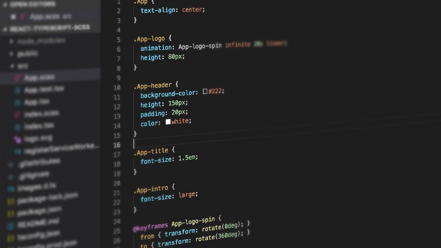
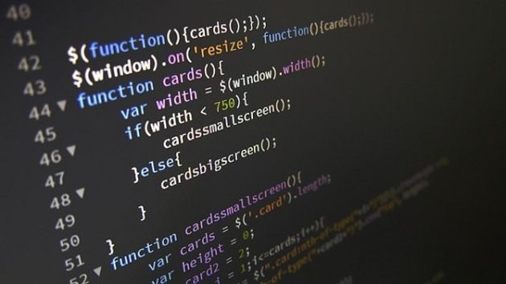
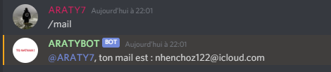
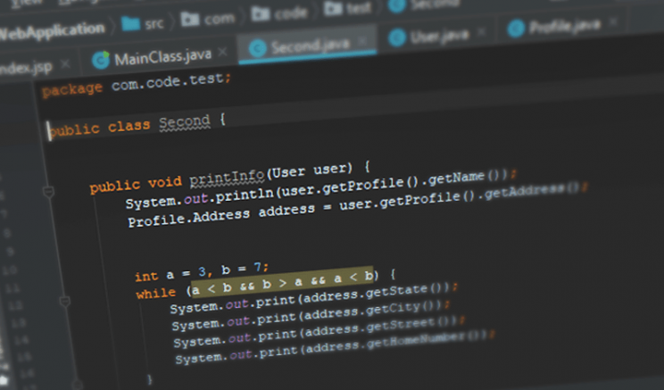

Les différents langages de programmation
Il existe beaucoup de langages de programmation différents, des simples, des complexes, des plus pratiques que d’autres, etc. Ce qui est facile avec la programmation, c’est que nous devons juste avoir un ordinateur, un éditeur de texte et de l’imagination pour réaliser nos codes.
Voici une présentation des principaux langages de programmation informatiques avec leurs fonctions et des exemples.
Nous commençons avec l’HTML, un langage de balises créé dans les années 1990 par Tim Berners-Lee, aussi inventeur du World Wide Web. Aujourd’hui, la version actuelle est le HTML5. Ce langage est composé de balises formant un code très propre qui constituent nos pages web aujourd’hui. D'autres technologies comme le CSS et le JavaScript sont utilisés avec l'HTML. Sur ce langage, nous pouvons insérer du texte, des images, des vidéos, des liens, etc. Voilà un exemple d’HTML.

Source blog.udacity.com

Source blog.hubspot.fr
Le problème avec l’HTML, c’est qu’on ne peut pas faire des
sites très beaux, ils ressemblent à cela. Ce sont simplement
des sites avec du texte, des titres, un peu de couleur,
mais rien d'impressionnant. Heureusement que le CSS est
arrivé…
Source w3.org
En deuxième, le CSS est un langage complétant l’HTML, c’est ce langage qui modifie les propriétés de notre page HTML. CSS signifie "Cascading Style Sheets" et c’est avec lui qu’on change la couleur de police, la taille des images, etc. de notre page HTML La version actuelle est le CSS3 et c’est avec ce langage que nous pouvons affiner et structurer notre page HTML pas très jolie. Le code CSS ressemble à cela :
Source medium.com
Ce sont des propriétés que nous appliquons sur notre contenu HTML. Petit exemple, si j'aimerais avoir écrire du texte jaune sur un site de fond noir, je m'y prends de la manière suivante :
body
{
background-color: black; /*Applique un fond noir sur le body*/
}
p
{
color: yellow; /*Applique une couleur jaune sur le p*/
}
Ensuite, nous avons le JavaScript, un langage sorti en 1995 connu pour être le langage de script pour les pages web. Son créateur est Brendan Eich, informaticien américain, fondateur de la société Brave Software dont il est directeur général. C’est donc un langage beaucoup utilisé dans l’univers du web. Il s’associe à l’HTML et le CSS en fonctionnant avec des scripts, il est aujourd’hui à sa 5ème version. Voici un exemple de code en Javascript :
Source zdnet.fr
En JavaScript, il est possible d'effectuer des fonctions pour animer notre page HTML. Cela est très pratique pour styliser notre site. Le JavaScript fonctionne sur l'extension .js principalement. Pour les connaisseurs, le JavaScript peut être utilisé pour développer un bot sur l'application Discord, ce n'est pas réellement compliqué et il est possible de faire énormément de choses avec.
Puis, nous avons le PHP, un langage de script comme le JavaScript qui a été créé en 1994 par Rasmus Lerdorf, programmeur groenlandais et canadien. Le PHP est un langage écrit en C, autre langage que nous verrons plus tard, qui est conçu pour le développement d’applications web. Il peut être intégrer très facilement à l’HTML. Voici une image de code PHP intégrée dans un code HTML.
Source cleverplugins.com
En 5ème, le langage Java, un langage sorti en 1995 au SunWorld, est un langage qui a été racheté en 2009 par Oracle. Le nom Java a été trouvé car le café (java en argot américain) est la boisson préférée de beaucoup de programmeurs. Java reprend en grande partie le C++ et a été créé car l'ingénieur Patrick Naughton n'était pas satisfait du C++. Java est le langage qui a été utilisé pour développer le jeu Minecraft, en 2009.
Source interestingengineering.com
La mascotte de Java est Duke, elle a été conçue pour définir un agent logiciel qui exécutait des tâches pour l'utilisateur au début de Java. Voici à quoi elle ressemble :
Source pinclipart.com